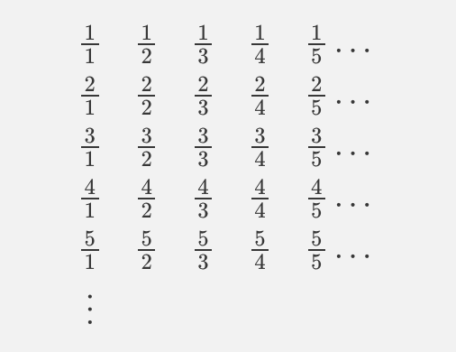
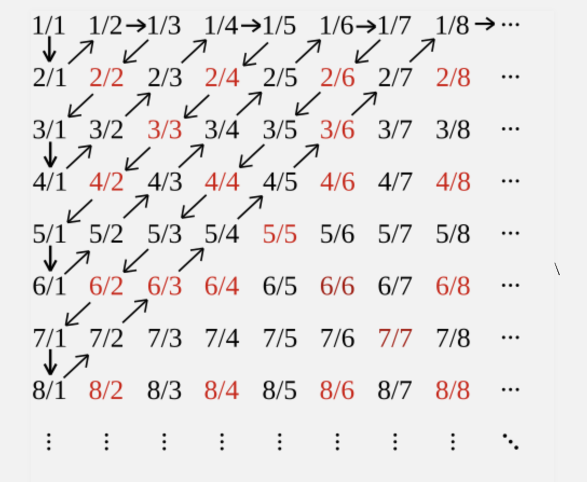

In today’s lesson, we will study this question closely about when there is a bijection between two infinite sets. We will first look at \(\mathbb{N}\). Sets that can be put in bijection with \(\mathbb{N}\) are called countably infinite. Sets that are either finite or countably infinite are called countable. Often times the word countable is used to mean countably infinite, but this should be clear from the context (if a set is countably and clearly not finite, it’s countably infinite). The cardinality of \(\mathbb{N}\) is denoted \(\aleph_0\), read “aleph null” or “aleph naught”. is referred to as the “smallest infinite cardinality”.
Last time, we saw that \(2\mathbb{N}\), the set of even numbers, is countably infinite. We saw that \(f : \mathbb{N} \to 2\mathbb{N}\) given by \(f(n)=2n\) is a bijection.
Symmetry
Ideally, \(|A|=|B|\) should mean the same thing as \(|B|=|A|\). But \(|A|=|B|\) means that there is a bijection \(f : A \to B\), and \(|B|=|A|\) means that there is a bijection \(g : B \to A\). So technically, they do not mean the same thing. But we can prove that these two statements are logically equivalent: if there is a bijection \(f : A \to B\), then there is another bijection \(g : B \to A\). We say that cardinality is symmetric: if there’s a bijection from one set to another, there is another one backward.
Let’s only look at an example here, but you should be prepared to prove a statement like this (on a problem set). We saw that \(f : \mathbb{N} \to 2\mathbb{N}\) given by \(f(n)=2n\) is a bijection. Can we find a bijection \(g : 2\mathbb{N} \to \mathbb{N}\)?
Start with an even natural number \(y\). By definition, that means there is some \(n\) such that \(2n=y\). So let’s let \(g(y)=n\). That is, let’s let \(g(y) = \dfrac{y}{2}\). Since \(y\) is an even number, we can divide it by 2, and still get a natural number.
Why is this a bijection? First, it’s one to one. If \(\dfrac{x}{2} = \dfrac{y}{2}\), then by algebra we get \(x=y\). And it’s onto: if \(n \in \mathbb{N}\), let \(y=2n\) , and \(\dfrac{2n}{2} = n\).
More generally: what did we do here? What’s the relationship between \(f\) and \(g\)?
Integers
Recall that \(\mathbb{Z}\) is the set of all integers, and so it contains \(\mathbb{N}\) as well as \(-1, -2, -3, \ldots\) We will show that \(|\mathbb{N}|=|\mathbb{Z}|\). So again we will see an example of an infinite set that contains a “smaller” infinite set, but the two can be matched up in a one to one correspondence.
The idea here is that we can “re-order” the integers starting at 0 and going outward. That is, we can write the integers down in the order \(0, -1, 1, -2, 2, \ldots\), alternating between negatives and positives. We have not written down, explicitly, the bijection, but we could write one down as a piecewise function: \[f(n) = \begin{cases} \frac{n}{2} & \mbox{if } n \mbox{ is even}\\
-\frac{n+1}{2} &\mbox{if } n \mbox{ is odd}\end{cases}\]
Let \(\mathbb{O}\) be the set of odd numbers. Notice that \(f(2\mathbb{N})\), the image of the set of even numbers, is \(\mathbb{N}\), for the same reason that the function \(g: 2\mathbb{N} \to \mathbb{N}\) in the previous section was a bijection. Also notice that \(f(\mathbb{O})\) is the set of all negative integers: \(f(1) = -1\), \(f(3) = -2\), \(f(5) = -3\), etc. This is not a proof, but a formal proof could be given later on.
Transitivity
So far we have seen that \(|\mathbb{N}| = |2\mathbb{N}|\) and that \(|\mathbb{N}| = |\mathbb{Z}|\). We might expect, then that \(|2\mathbb{N}| = |\mathbb{Z}|\). We would be correct!
In general, cardinality is transitive: if we have three sets \(A\), \(B\), \(C\) and \(|A|=|B|\) and \(|B|=|C|\) , then \(|A|=|C|\). How might we prove this? We need to show: if we have a bijection \(f: A \to B\) and a bijection \(g: B \to C\), that we can find a bijection \(h : A \to C\). Again, I will ask you to prove this in general, but let’s look at a specific example here.
We want to map the numbers \(0, 2, 4, 6, 8, \ldots\) to the numbers \(\ldots, -2, -1, 0, 1, 2, \ldots\). How might we do this? Well, we have a rule which puts the numbers \(0, 2, 4, 6, 8, \ldots\) in one to one correspondence with \(0, 1, 2, 3, \ldots\), and a rule which puts in a one to one correspondence with all integers \(\ldots, -2, -1, 0, 1, 2, \ldots\).
So let’s combine these two rules! That is, given an even number \(y\), we find the natural number it’s associated with, \(n\). Then we look up the integer,\(x\), that is associated with \(n\). That’s how we define \(F : 2\mathbb{N} \to \mathbb{Z}\): \(F(y)\) will be that \(x\).
Let’s check a few examples. Remember the two bijections we have:
Starting with \(y \in 2\mathbb{N}\) we get \(n = \frac{y}{2}\).
the map from \(\mathbb{N}\) to \(\mathbb{Z}\) was defined piecewise: if \(n\) is even, then \(n \mapsto \frac{n}{2}\). If \(n\) is odd, then \(n \mapsto -\frac{n+1}{2}\).
\(\frac{0}{2}\) is \(0\), which is even. So we again divide that by 2, and \(F(0)=0\).
\(\frac{2}{2}\) is \(1\), which is odd. So \(F(2)\) is \(-\frac{1 + 1}{2}\), which is \(-11\)
\(\frac{4}{2}\) is \(2\), which is even. We again divide that by 2, and \(F(4)=2\).
We are not proving it here, but \(F\) is, in fact, a bijection. Proving that it is a bijection would basically involve the same steps as proving the more general statement, so we will skip this for now.
Positive Rationals
Our proof that the integers are countably infinite boils down to this fact: we can list all integers in an infinite sequence, such that each integer shows up at some finite position (and shows up exactly once). We list the integers as \(0, -1, 1, -2, 2, -3, 3, -4, 4, \ldots\). The rule we gave above turns this from an “infinite sequence” into an explicit function \(h : \mathbb{N} \to \mathbb{Z}\), but the actual rule is not so important as the fact that there is a way to list these numbers out.
The caveat here that each integers shows up at a finite position is important. The listing \(0, 1, 2, 3, \ldots, -1, -2, -3, -4, \ldots\) is not a valid “infinite sequence” in this sense. At which position does \(-5\) show up?
Now let’s consider the rational numbers \(\mathbb{Q} = \{ \frac{m}{n} : m, n \in \mathbb{Z}, n \neq 0 \}\). Are the rational numbers also countably infinite? Is there a way to list out all rational numbers in an infinite sequence? It’s not entirely obvious: if we start by listing out all the integers, we will miss out on numbers likes \(\frac{1}{2}, \frac{3}{2}\), etc. If we start by listing out all the numbers whose denominator is \(2\), we will miss out on \(\frac{1}{3}\).
It’s not clear at all how we might do this! One would be forgiven for believing there is no way to list out all rational numbers in an infinite sequence. But there is a way!
For now, we will only list out the positive rational numbers. The first step is to write out all possible rational numbers in an infinite 2-dimensional array. The number on the \(m\)-th row and \(n\)-th column will be \(\frac{m}{n}\):

Then start at the top left and “spiral around”, ignoring fractions which can be reduced. So we end up with the listing: \(1, 2, \dfrac{1}{2}, \dfrac{1}{3}, 3, 4, \dfrac{3}{2}, \dfrac{2}{3}, \dfrac{1}{4}, \ldots\)
This spiraling is visualized in the following image: start at 1/1 on the top left, and then follow along the arrows, ignoring numbers that can be reduced (these are pointed out in red). Every rational number, expressed as \(\frac{p}{q}\) in simplest form, will show up in this array on the \(p\)-th row and \(q\)-th column, and that position will be seen in finitely many steps. So that means this infinite listing we have will list out all positive rational numbers.

Question: How might you extend this result to show that all of \(\mathbb{Q}\) is countable? Any ideas using \(\mathbb{Z}\) and transitivity?
Question: How might you use this idea to similarly show that the set of all ordered pairs of integers is countable?
Real Numbers
At this point, you would be forgiven for thinking, as many mathematicians in history did, that all infinite sets have the same size, and that formalizing this notion using bijections and cardinality is just proving what we already know.
Of course, I already hinted that there are uncountable infinite sets! In fact, there are many, but the most natural uncountably infinite set is the set of real numbers, \(\mathbb{Z}\).
How might we prove that this set is not countable? Before we try to write a real proof, we can check that we don’t know of any bijection between \(\mathbb{N}\) and \(\mathbb{R}\). For example, the function \(f : \mathbb{N} \to \mathbb{R}\) given by \(f(n) = \sqrt{n}\) is not a bijection: \(\pi\) is not in the image of \(f\).
But we need something stronger than just “Every function I’ve looked at is not a bijection.” We need to show that there is no bijection. This is saying: “I can prove that, for every single function \(f : \mathbb{N} \to \mathbb{R}\), something goes wrong.”
That is, if I looked at a few functions, and showed that they weren’t bijections, that’s not enough. Maybe the square root example we thought of just wasn’t clever enough. Perhaps we just weren’t clever enough in coming up with the rule, like what happened with \(\mathbb{Q}\)? If we really want to prove that there is no bijection, we have to give an argument that works for every function \(f : \mathbb{N} \to \mathbb{R}\).
That is, given a function \(f : \mathbb{N} \to \mathbb{R}\), we have to show that is not a bijection. In fact, what we will show is that \(f\) is not a surjection: it’s not onto. We will argue in a very general way, so that this argument can be applied to every function from \(\mathbb{N}\) to \(\mathbb{R}\), thereby showing there is no surjection from \(\mathbb{N}\) to \(\mathbb{R}\).
The idea will be to find a real number \(r\) which is different from \(f(0)\), different from \(f(1)\), different from \(f(2)\), etc. This was Cantor’s Diagonal Argument: if you list out the numbers \(f(0)\), \(f(1)\), \(f(2)\),...,etc in a vertical table, you can find a real number that’s not on that list by picking a number whose \(n\)-th digit after the decimal place is different from that of \(f(n)\). To make this rule concrete, let’s say that our number \(r\) is defined by the following rule: if the \(n\)-th digit of \(f(n)\) is equal to \(1\), then the \(n\)-th digit of \(f(n)\) will be 2. Otherwise, the \(n\)-th digit of \(f(n)\) will be 1.
What does that mean? Let’s look at an example. Suppose is given by the following table:
f(0) &= 0.131569108 …
f(1) &= 2.718281828 …
f(2) &= 3.141592653 …
f(3) &= 1.741213562 …
f(4) &= 2.618128176 …
⋮
Let’s look at the diagonal digits here:
f(0) &= .131569108 …
f(1) &= 2.18281828 …
f(2) &= 3.11592653 …
f(3) &= 1.74213562 …
f(4) &= 2.61828176 …
⋮
If we apply the diagonal argument, we end up with a number \(r\) that starts off as \(1.1122...\). We know that this number we end up with cannot be on this list! That’s because the number won’t be equal to \(f(n)\) for any \(n\): at the \(n\)-th place after the decimal, \(f(n)\) and \(r\) are different!
This is a subtle argument: for each \(f\), there is a different \(r\) that we can find that is not in the image of \(f\). So there is no way for a function \(f : \mathbb{N} \to \mathbb{R}\) to be a surjection. In terms of cardinality, this means \(|\mathbb{R}| \neq \aleph_0\).
Infinite Binary Sequences
A very similar argument can be given to show that the set of all infinite binary sequences is uncountable. Let’s first define what infinite binary sequences are:
Definition: An infinite binary sequence is a function \(s : \mathbb{N} \to \{ 0, 1 \}\).
This might be a strange definition of a sequence, but recall, before, that functions whose domain is \(\mathbb{N}\) really can be thought of as infinite sequences: the first element of the sequence is \(f(0)\), the next element is \(f(1)\), then comes \(f(2)\) etc.
Let \(B = \{ s : s\) is an infinite binary sequence\(\}\) . How might you show that \(B\) is uncountable using a “Diagonal” argument? You would again try to make an argument that shows that no \(f : \mathbb{N} \to B\) is a surjection. So you would look at \(f(0)\), \(f(1)\), \(f(2)\),...,etc. Each \(f(n)\) is an infinite binary sequence. And you would try to construct a new infinite binary sequence that’s different from each \(f(n)\) in some way. Can you think of how to do this?